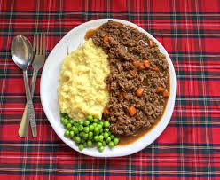

Mince and Potatoes Recipe

Description
Mince and potatoes is a hearty and comforting dish that features seasoned
minced meat cooked with onions, carrots, and celery, and served with
creamy mashed potatoes. This classic British dish is often served with
a side of peas, and can be enjoyed as a main course for lunch or dinner.
it's a simple and satisfying meal that is perfect for cold or rainy days,
and can be easily customized
with your favorite herbs and spices to add your own personal touch.
Ingredients
- 1 Pack (500g) Lean Minced Beef
- 1 Medium Sized (150g) Onion
- 2 Medium Sized (160g) Carrots
- 1 Stick (30g) Celery
- 2 Tablespoons (20g) Vegetable Oil
- 2 Tablespoons (40g) Plain Flour
- 1 (7g) Beef Stock Cube (used reduced salt whenever possible)
- 1 Pint (600ml) Boiling Water
- 2 Tablespoons (30g) Worcestershire Sauce
- 1 Pinch Ground Black Pepper
- 6 Medium (520g) Potatoes
- 2 Cups (320g) Peas
Steps
- Peel and slice the onion, carrots and potatoes. Wash and slice the celery.
- Fry the onion, carrots and celery in the vegetable oil over a medium heat for about 5 minutes until softened.
- Increase the heat and add the minced beef to the pan and fry until it is well browned (8-10 minutes).
- Reduce the heat and sprinkle the flour over the meat and vegetables and stir for a couple of minutes to cook the flour.
- Dissolve the stock cube in the water then add the stock, Worcestershire sauce and pepper to the pan. Stir until the sauce comes to the boil and starts to thicken. Cover the pan and simmer for about 30 minutes until everything is tender, adding more stock if needed.
- Meanwhile, cook the potatoes in boiling water for 20-25 minutes until soft. Use a potato masher or fork and mash the potatoes until smooth.
- Cook the peas in boiling water and serve with mash and mince.